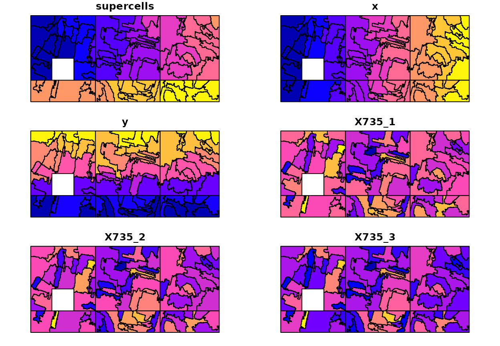
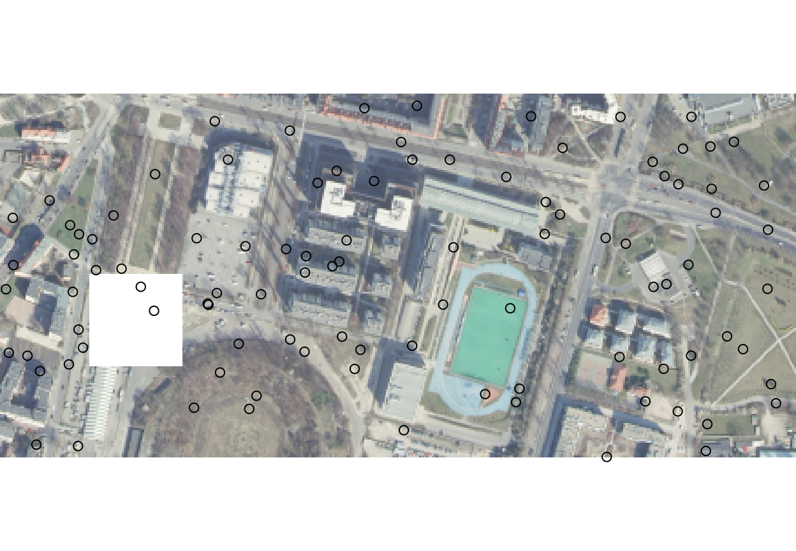
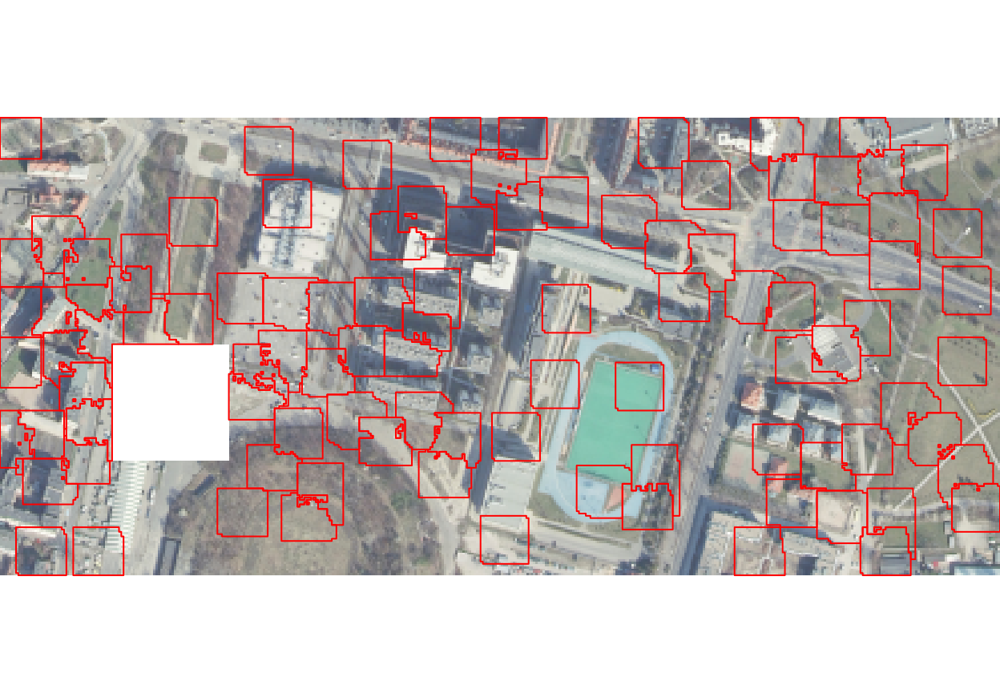
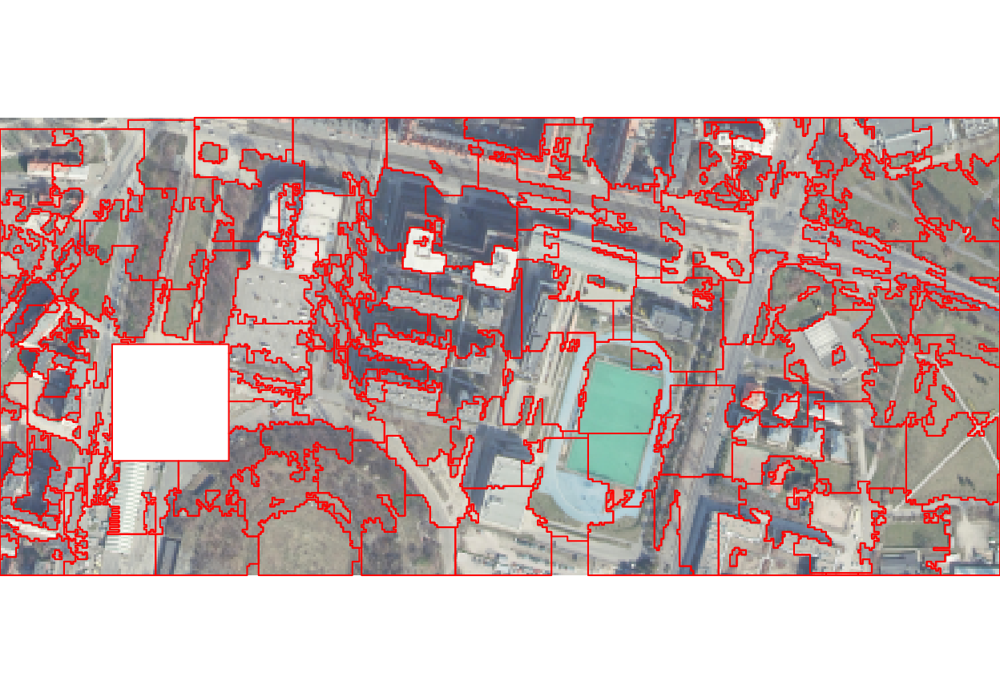

Experimental features of the supercells package
Jakub Nowosad
2023-08-07
Source:vignettes/articles/experimental.Rmd
experimental.RmdSuperpixels is a collection of segmentation concepts of grouping pixels with similar characteristics. It is often used in computer vision to delineate parts of RGB images that are more meaningful and easier to analyze. When applied to RGB images, each superpixel contains similar colors that also could represent real-world objects. A large number of methods for creating superpixels were developed in the last decades, with the SLIC algorithm (Achanta et al. (2012), doi:10.1109/TPAMI.2012.120) being the most prominent.
The supercells package aims to utilize the concept of superpixels to a variety of spatial data. This package works on spatial data with one variable (e.g., continuous raster), many variables (e.g., RGB rasters), and spatial patterns (e.g., areas in categorical rasters). Therefore, it enables not only to find areas that look similar on an RGB (satellite) image, but also to regionalize areas with comparable values of one or more variables.
This vignette shows some experimental features of the supercells package. To reproduce the following results on your own computer, install and attach the packages:
library(supercells) # superpixels for spatial data
library(terra) # spatial raster data reading and handling
library(sf) # spatial vector data reading and handlingThe first step is to read the input data – ortho.tif –
included in the supercells package, that contains three
layers representing red, green, and blue satellite bands1.
ortho = rast(system.file("raster/ortho.tif", package = "supercells"))
plot(ortho)
Large data support
The supercells package supports calculations on
datasets that do not fit into computer memory (RAM).2 This is done by
splitting the input data into smaller chunks, and then reading each
chunk separately into the memory. To turn this feature on, you need to
use the chunks argument:
-
chunks = FALSE- the default. Chunking is not used. -
chunks = TRUE- only large input data will be split into chunks of automatically determined size -
chunks = (a numeric value)- the input raster data is split into chunks with user-defined size, e.g.,chunks = 150means that each chunk will have the size of 150 by 150 cells at the most
sc_ortho = supercells(ortho, k = 100, compactness = 1, chunks = 150)The latter approach can be seen in the visualization of the results below:
plot(sc_ortho)
Parallel calculations
The large data support can be extended and used for parallel computations. In this approach, we need to:
- Attach the future package.
- Specify the parallelization strategy (the
plan()function). - Use
chunks = TRUEor setchunksto some numeric value insupercells(). - Set
future = TRUEinsupercells().
library(future)
plan(multisession, workers = 2)
sc_ortho2 = supercells(ortho, k = 100, compactness = 1,
chunks = 150, future = TRUE)The code above will divide the whole area into six chunks, and use
two separate R sessions (workers = 2) to work on some
chunks in parallel.
The calculations’ result is the same as in the previous example; however, it should decrease computation time for large datasets.3
plot(sc_ortho2)Custom cluster centers
By default, the original SLIC algorithm uses regularly distributed cluster centers, where each of the initial cluster centers has an overlapping “search window” with its neighbors. The next experimental feature in supercells is the possibility of specifying custom cluster centers.4
This can be done by providing an sf object with any
number of points. The sf object can be read from a file, or
created manually, as in the example below:
set.seed(2021-11-21)
custom_centers = sf::st_as_sfc(sf::st_bbox(ortho))
custom_centers = sf::st_sample(custom_centers, 100, type = "random")
custom_centers = sf::st_sf(geom = custom_centers)
plot(ortho)
plot(st_geometry(custom_centers), add = TRUE)
When we want to use custom cluster centers, then we need to set both
k and step arguments:
-
k- to provide ansfobject with any number of points. -
step- to provide a size of the “search window”.
The impact of setting different values of step can be
seen in the examples below. When step was set to 10, then
many locations in our area were not segmented:
ortho_slic1 = supercells(ortho, k = custom_centers, step = 10,
compactness = 1, clean = FALSE)
plot(ortho)
plot(st_geometry(ortho_slic1), add = TRUE, border = "red")
Increasing the step value allows to include more
locations into the segmentation process. However, it also results in
many detached areas (tiny polygons not connected directly to the main
superpixels):
ortho_slic2 = supercells(ortho, k = custom_centers, step = 20,
compactness = 1, clean = FALSE)
plot(ortho)
plot(st_geometry(ortho_slic2), add = TRUE, border = "red")The result could be made more smooth by allowing for enforcement of the supercells’ connectivity:
ortho_slic3 = supercells(ortho, k = custom_centers, step = 20,
compactness = 1, clean = TRUE, minarea = 8)
plot(ortho)
plot(st_geometry(ortho_slic3), add = TRUE, border = "red")